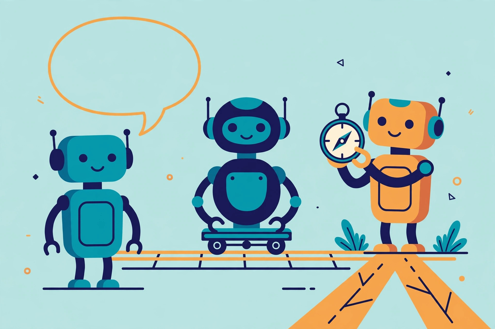

AI agents vs chatbots vs automation: which one do you actually need?

Three terms get used as if they were interchangeable: chatbot, automation, and AI agent. Vendors swap them freely — a scripted help widget gets marketed as an "agent," and a simple rule that copies data between two apps gets an "AI" label. The confusion costs people money and patience, because the three are genuinely different tools with different strengths. This guide separates them using the definitions the builders themselves publish, then gives you a short check for deciding which one a given job actually needs.
The short version
A chatbot converses: you type, it replies. An automation workflow follows a fixed path you designed in advance: when this happens, do that. An AI agent is given a goal and decides the steps itself, choosing tools and adjusting as it goes. Chatbots talk, workflows repeat, agents decide. Most real products mix all three — but knowing which part is which tells you what to expect from it, what it will cost, and how it can fail.
Three definitions that actually hold up
Chatbot. At its core, a chatbot is a conversational interface — primarily a way to talk with a system. Some are simple scripts that match your words to prepared answers; others use a language model to phrase replies freely. Either way, conversation is the whole job. A chatbot can be the front door to an agent behind it, but conversation alone doesn't make a system agentic: if nothing acts on the world beyond the chat window, you have a chatbot, however clever its answers sound.
Automation workflow. A workflow follows a path designed in advance. Anthropic, in its engineering guidance for builders, defines workflows as systems where models and tools are orchestrated through predefined code paths — the route is fixed before anything runs. The everyday version is Zapier's: a Zap is an automated workflow built from a trigger and one or more actions, and every time the trigger event happens, the same action steps run. Nothing about the route is improvised. That rigidity is the point: the same input produces the same behaviour, every time.
AI agent. Anthropic's matching definition: an agent is a system where the model dynamically directs its own process and tool usage, staying in control of how it accomplishes the task. You supply the goal, not the route. The agent plans, picks tools, looks at what came back, and decides what to do next — the abilities covered in the first guide in this series, what AI agents are. Under the hood, an agent is built on a model enhanced with retrieval, tools, and memory; it's those additions, plus control over the steps, that separate it from a chatbot answering questions.
Side by side
| Chatbot | Automation workflow | AI agent | |
|---|---|---|---|
| Who decides the steps? | Nobody — it replies turn by turn | You do, in advance | The model does, as it works |
| Best at | Answering, explaining, drafting in conversation | The same job, run the same way, many times | Jobs where the steps can't be known in advance |
| Handles a surprise | Answers anyway — sometimes by making something up | Breaks or skips: the path has no branch for it | Can adjust its approach and try another route |
| Predictability | Replies vary; actions don't happen | Highest — same input, same actions | Lowest — two runs of the same task can differ |
| Failure mode | A confident answer that happens to be wrong | Stops, skips, or misfires when input doesn't fit the path | Drifts off-goal, or compounds an early mistake across later steps |
| How usage is counted | Per conversation, in the chat window | Per completed action (Zapier counts a task per successful action) | Per step the run takes — longer runs consume more |
| Your main job | Ask good questions | Design the path carefully once | Brief it well, then check its work |
The row that matters most is predictability. Anthropic's guidance to builders is blunt about the trade: workflows offer predictability and consistency for well-defined tasks, while agents are the better option when flexibility and model-driven decision-making are what's needed — and agentic systems generally trade latency and cost for that performance. An agent is not an upgrade to a workflow. It's a different bargain.
One job, three ways
Take a small-business staple: a customer emails asking where their order is.
- As a chatbot: the customer types the question into a chat window and gets an answer drawn from your help pages — "orders usually ship in two business days." Helpful, but it can't see their order.
- As a workflow: the email arriving is the trigger. The workflow extracts the order number, looks it up, and sends the tracking status from a template. It works flawlessly — until an email arrives with no order number, or two, or a question that isn't about shipping at all. The path has no branch for those, so they need a human or a fallback rule you designed.
- As an agent: the agent reads the email, works out what the customer is actually asking, finds the order, checks the carrier, notices the parcel is late, and drafts a reply that says so. It also might misread the email, check the wrong order, or state the late reason with more confidence than the evidence supports — which is why its draft still gets checked, as covered in checking an agent's work.
Anthropic points at this exact shape in its own guidance: customer support is a promising fit for agents precisely because it combines a familiar chatbot interface with real action through tools. The conversation is the chatbot part. The looking-up and doing are the agent part.
They overlap more than the marketing admits
Real systems are usually hybrids. One product can contain all three layers: a chatbot as the interface a customer talks to, a fixed workflow validating and routing each request, and an agent handling only the part that needs judgment — interpreting a messy, unstructured message, or choosing among several tools. Modern workflow tools also blur the line from the other direction: a workflow can contain a step where a model drafts or classifies something, and it is still a workflow, because the path was designed in advance and the model only fills in a step. When a vendor calls everything an agent, ask the deciding question: who chose the steps — a person in advance, or the model at run time? The honest answer tells you which product you actually have.
Which one do you need? A five-question check
- Can you write the steps down in advance, in order? If yes, you almost certainly want a workflow. It will be faster, cheaper, and identical every run.
- Are the inputs structured and the rules stable? Forms, order numbers, known categories — structured inputs with stable rules are where fixed workflows shine, and they're easier to test and audit.
- Does the job change shape every time? If each instance needs different sources consulted, different tools chosen, or a judgment call about what "done" means, that's the agent's territory.
- What happens when it goes wrong? If a wrong action is expensive or hard to reverse — sending external messages, moving money, deleting data — keep human approval in front of it regardless of which tool you pick, and favour the option whose behaviour you can predict.
- Is conversation itself the product? If people just need answers in a chat window, a chatbot is the whole purchase. Don't pay agent prices for a talking FAQ.
What success looks like: for any tool you're considering, you can say which of the three it is, which question above decided it, and what it will predictably do with a weird input. If the last part is "unknown," start with the simpler tool. Anthropic's advice to professional builders applies unchanged to buyers: find the simplest solution that works, and add complexity only when it demonstrably earns its place.
FAQ
Is a chatbot with AI in it an agent? Not by itself. If it only converses — even brilliantly — it's a chatbot. It becomes part of an agent system when a model behind it can choose actions and use tools to pursue a goal, not just reply.
My automation tool added an "AI step." Did it become an agent? No. A model drafting text inside one step of a pre-designed path is still a workflow; the route didn't change, and the model didn't choose it.
Which is cheapest? Roughly in order: a plain chatbot, then a fixed workflow billed per action, then an agent — because agent runs consume usage on every step they take. The guide on how much AI agents cost breaks down the actual pricing models with dated vendor prices.